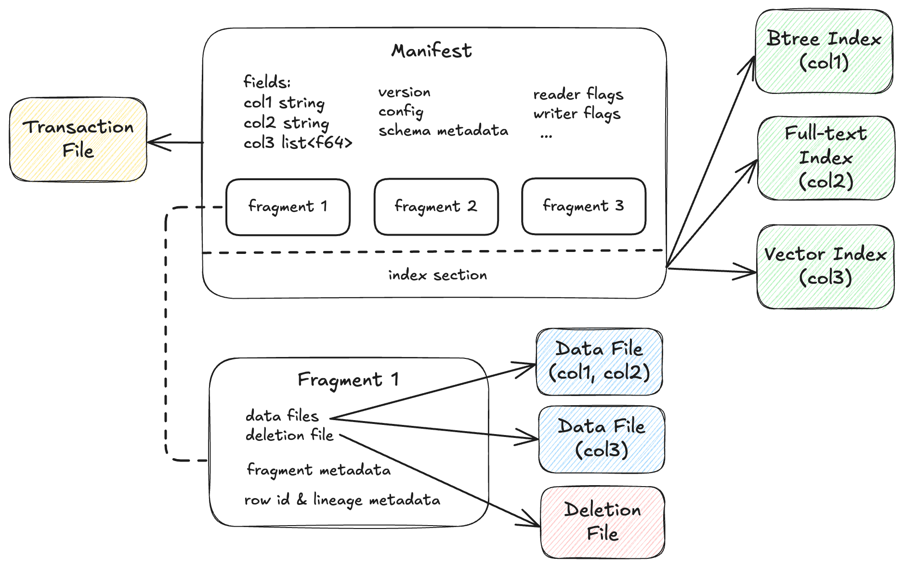

Lance Table Format¶
Overview¶
The Lance table format organizes datasets as versioned collections of fragments, data files, deletion files, and indices. Each version is described by an immutable manifest that references the physical data for that snapshot.
The format is designed for machine learning and highly selective workloads where column additions, index maintenance, and partial rewrites must be cheap. It supports ACID transactions, schema evolution, time travel, and efficient incremental updates through Multi-Version Concurrency Control (MVCC).
Design Goals¶
Two-Dimensional Storage¶
Rows are partitioned into fragments, and each fragment can contain multiple data files that each provide one or more columns. This lets writers add or backfill columns by attaching new data files to existing fragments instead of rewriting the full table.
First-Class Indices¶
Indices are part of the table format lifecycle. The table metadata describes index discovery and transactional coordination, while the detailed search structures remain separate index formats. This gives engines a uniform way to create, drop, update, and query indices without coupling the table format to any single indexing algorithm.
External Manifest Store¶
Lance can commit directly to object storage, but deployments may also coordinate commits through an external manifest store. In that model, the external system helps serialize commits and apply governance checks, while the canonical table state is still persisted in the Lance table format.
Manifest¶

A manifest describes a single version of the dataset. It contains the complete schema definition including nested fields, the list of data fragments comprising this version, a monotonically increasing version number, and an optional reference to the index section that describes a list of index metadata.
Manifest protobuf message
message Manifest {
// All fields of the dataset, including the nested fields.
repeated lance.file.Field fields = 1;
// Schema metadata.
map<string, bytes> schema_metadata = 5;
// Fragments of the dataset.
repeated DataFragment fragments = 2;
// Snapshot version number.
uint64 version = 3;
/* The file position of the version auxiliary data.
* * It is not inheritable between versions.
* * It is not loaded by default during query.
*/
uint64 version_aux_data = 4;
message WriterVersion {
// The name of the library that created this file.
string library = 1;
/* The version of the library that created this file. Because we cannot assume
* that the library is semantically versioned, this is a string. However, if it
* is semantically versioned, it should be a valid semver string without any 'v'
* prefix. For example: `2.0.0`, `2.0.0-rc.1`.
*
* For forward compatibility with older readers, when writing new manifests this
* field should contain only the core version (major.minor.patch) without any
* prerelease or build metadata. The prerelease/build info should be stored in
* the separate prerelease and build_metadata fields instead.
*/
string version = 2;
/* Optional semver prerelease identifier.
*
* This field stores the prerelease portion of a semantic version separately
* from the core version number. For example, if the full version is "2.0.0-rc.1",
* the version field would contain "2.0.0" and prerelease would contain "rc.1".
*
* This separation ensures forward compatibility: older readers can parse the
* clean version field without errors, while newer readers can reconstruct the
* full semantic version by combining version, prerelease, and build_metadata.
*
* If absent, the version field is used as-is.
*/
optional string prerelease = 3;
/* Optional semver build metadata.
*
* This field stores the build metadata portion of a semantic version separately
* from the core version number. For example, if the full version is
* "2.0.0-rc.1+build.123", the version field would contain "2.0.0", prerelease
* would contain "rc.1", and build_metadata would contain "build.123".
*
* If absent, no build metadata is present.
*/
optional string build_metadata = 4;
}
/* The version of the writer that created this file.
*
* This information may be used to detect whether the file may have known bugs
* associated with that writer.
*/
WriterVersion writer_version = 13;
// If present, the file position of the index metadata.
optional uint64 index_section = 6;
// Version creation Timestamp, UTC timezone
google.protobuf.Timestamp timestamp = 7;
// Optional version tag
string tag = 8;
/* Feature flags for readers.
*
* A bitmap of flags that indicate which features are required to be able to
* read the table. If a reader does not recognize a flag that is set, it
* should not attempt to read the dataset.
*
* Known flags:
* * 1 << 0: deletion files are present
* * 1 << 1: row ids are stable and stored as part of the fragment metadata.
* * 1 << 2: use v2 format (deprecated)
* * 1 << 3: table config is present
* * 1 << 4: dataset uses multiple base paths
* * 1 << 5: transaction file writes are disabled
* * 1 << 6: data overlay files are present (see DataOverlayFile). Readers that do
* not understand overlays must refuse the dataset, since ignoring an overlay
* would silently return stale base values.
* * 1 << 7: some index declares covering columns, so IndexMetadata.fields means
* the keyed columns followed by the carried ones named in covering_fields (see
* IndexMetadata). Readers that do not understand it must refuse the dataset,
* since selecting an index by membership of fields would answer a query on a
* merely-carried column with an index keyed on a different column. Writers must
* refuse it too: one that treats every entry of fields as keyed would maintain
* the index against the wrong dependency set.
* * 1 << 8: reserved for datasets that may reference recognized V2 data files
* with different exact versions. Implementations that do not support the
* per-file exact-version contract must treat this bit as unknown.
*/
uint64 reader_feature_flags = 9;
/* Feature flags for writers.
*
* A bitmap of flags that indicate which features must be used when writing to the
* dataset. If a writer does not recognize a flag that is set, it should not attempt to
* write to the dataset.
*
* The flag identities are the same as for reader_feature_flags, but the values of
* reader_feature_flags and writer_feature_flags are not required to be identical.
*/
uint64 writer_feature_flags = 10;
/* The highest fragment ID that has been used so far.
*
* This ID is not guaranteed to be present in the current version, but it may
* have been used in previous versions.
*
* For a single fragment, will be zero. For no fragments, will be absent.
*/
optional uint32 max_fragment_id = 11;
/* Path to the transaction file, relative to `{root}/_transactions`. The file at that
* location contains a wire-format serialized Transaction message representing the
* transaction that created this version.
*
* This string field "transaction_file" may be empty if no transaction file was written.
*
* The path format is "{read_version}-{uuid}.txn" where {read_version} is the version of
* the table the transaction read from (serialized to decimal with no padding digits),
* and {uuid} is a hyphen-separated UUID.
*/
string transaction_file = 12;
/* The file position of the transaction content. None if transaction is empty
* This transaction content begins with the transaction content length as u32
* If the transaction proto message has a length of `len`, the message ends at `len` + 4
*/
optional uint64 transaction_section = 21;
/* The next unused row id. If zero, then the table does not have any rows.
*
* This is only used if the "stable_row_ids" feature flag is set.
*/
uint64 next_row_id = 14;
message DataStorageFormat {
// The format of the data files (e.g. "lance")
string file_format = 1;
/* The max format version of the data files. The format of the version can vary by
* file_format and is not required to follow semver.
*
* Every file in this version of the dataset has the same file_format version.
*/
string version = 2;
}
/* The data storage format
*
* This specifies what format is used to store the data files.
*/
DataStorageFormat data_format = 15;
/* Table config.
*
* Keys with the prefix "lance." are reserved for the Lance library. Other
* libraries may wish to similarly prefix their configuration keys
* appropriately.
*/
map<string, string> config = 16;
/* Metadata associated with the table.
*
* This is a key-value map that can be used to store arbitrary metadata
* associated with the table.
*
* This is different than configuration, which is used to tell libraries how
* to read, write, or manage the table.
*
* This is different than schema metadata, which is used to describe the
* data itself and is attached to the output schema of scans.
*/
map<string, string> table_metadata = 19;
// Field number 17 (`blob_dataset_version`) was used for a secondary blob dataset.
reserved 17;
reserved "blob_dataset_version";
/* The base paths of data files.
*
* This is used to determine the base path of a data file. In common cases data file paths are under current dataset base path.
* But for shallow cloning, importing file and other multi-tier storage cases, the actual data files could be outside of the current dataset.
* This field is used with the `base_id` in `lance.file.File` and `lance.file.DeletionFile`.
*
* For example, if we have a dataset with base path `s3://bucket/dataset`, we have a DataFile with base_id 0, we get the actual data file path by:
* base_paths[id = 0] + /data/ + file.path
* the key(a.k.a index) starts from 0, increased by 1 for each new base path.
*/
repeated BasePath base_paths = 18;
// The branch of the dataset. None means main branch.
optional string branch = 20;
}
Schema & Fields¶
The schema of the table is written as a series of fields, plus a schema metadata map. The data types generally have a 1-1 correspondence with the Apache Arrow data types. Each field, including nested fields, have a unique integer id. At initial table creation time, fields are assigned ids in depth-first order. Afterwards, field IDs are assigned incrementally for newly added fields.
Column encoding configurations are specified through field metadata using the lance-encoding: prefix.
See File Format Encoding Specification for details on available encodings, compression schemes, and configuration options.
For complete schema specification details including supported data types, field ID assignment, and metadata handling, see the Schema Format Specification.
Field protobuf message
message Field {
enum Type {
PARENT = 0;
REPEATED = 1;
LEAF = 2;
}
Type type = 1;
// Fully qualified name.
string name = 2;
/* Field Id.
*
* See the comment in `DataFile.fields` for how field ids are assigned.
*/
int32 id = 3;
/// Parent Field ID. If not set, this is a top-level column.
int32 parent_id = 4;
/* Logical types, support parameterized Arrow Type.
*
* PARENT types will always have logical type "struct".
*
* REPEATED types may have logical types:
* * "list"
* * "large_list"
* * "list.struct"
* * "large_list.struct"
* The final two are used if the list values are structs, and therefore the
* field is both implicitly REPEATED and PARENT.
*
* LEAF types may have logical types:
* * "null"
* * "bool"
* * "int8" / "uint8"
* * "int16" / "uint16"
* * "int32" / "uint32"
* * "int64" / "uint64"
* * "halffloat" / "float" / "double"
* * "string" / "large_string"
* * "binary" / "large_binary"
* * "date32:day"
* * "date64:ms"
* * "decimal:128:{precision}:{scale}" / "decimal:256:{precision}:{scale}"
* * "time:{unit}" / "timestamp:{unit}" / "duration:{unit}", where unit is
* "s", "ms", "us", "ns"
* * "dict:{value_type}:{index_type}:false"
*/
string logical_type = 5;
// If this field is nullable.
bool nullable = 6;
// optional field metadata (e.g. extension type name/parameters)
map<string, bytes> metadata = 10;
bool unenforced_primary_key = 12;
/* Position of this field in the primary key (1-based).
* 0 means the field is part of the primary key but uses schema field id for ordering.
* When set to a positive value, primary key fields are ordered by this position.
*/
uint32 unenforced_primary_key_position = 13;
// Reserved for future use. Use unenforced_clustering_key_position instead.
bool unenforced_clustering_key = 14;
/* Position of this field in the clustering key (1-based).
* 0 means the field is not part of the clustering key.
*/
uint32 unenforced_clustering_key_position = 15;
// DEPRECATED ----------------------------------------------------------------
/* Deprecated: Only used in V1 file format. V2 uses variable encodings defined
* per page.
*
* The global encoding to use for this field.
*/
Encoding encoding = 7;
/* Deprecated: Only used in V1 file format. V2 dynamically chooses when to
* do dictionary encoding and keeps the dictionary in the data files.
*
* The file offset for storing the dictionary value.
* It is only valid if encoding is DICTIONARY.
*
* The logic type presents the value type of the column, i.e., string value.
*/
Dictionary dictionary = 8;
/* Deprecated: optional extension type name, use metadata field
* ARROW:extension:name
*/
string extension_name = 9;
/* Field number 11 was previously `string storage_class`.
* Keep it reserved so older manifests remain compatible while new writers
* avoid reusing the slot.
*/
reserved 11;
reserved "storage_class";
}
Unenforced Primary Key¶
Lance supports defining an unenforced primary key through field metadata. This is useful for deduplication during merge-insert operations and other use cases that benefit from logical row identity. The primary key is "unenforced" meaning Lance does not always validate uniqueness constraints. Users can use specific workloads like merge-insert to enforce it if necessary. The primary key is fixed after initial setting and must not be updated or removed.
A primary key field must satisfy:
- The field, and all its ancestors, must not be nullable.
- The field must be a leaf field (primitive data type without children).
- The field must not be within a list or map type.
When using an Arrow schema to create a Lance table, add the following metadata to the Arrow field to mark it as part of the primary key:
lance-schema:unenforced-primary-key: Set totrue,1, oryes(case-insensitive) to indicate the field is part of the primary key.lance-schema:unenforced-primary-key:position(optional): A 1-based integer specifying the position within a composite primary key.
For composite primary keys with multiple columns, the position determines the primary key field ordering:
- When positions are specified, fields are ordered by their position values (1, 2, 3, ...).
- When positions are not specified, fields are ordered by their schema field id.
- Fields with explicit positions are ordered before fields without.
Fragments¶

A fragment represents a horizontal partition of the dataset containing a subset of rows.
Each fragment has a unique uint32 identifier assigned incrementally based on the dataset's maximum fragment ID.
Each fragment consists of one or more data files storing columns, plus an optional deletion file.
If present, the deletion file stores the positions (0-based) of the rows that have been deleted from the fragment.
The fragment tracks the total row count including deleted rows in its physical rows field.
Column subsets can be read without accessing all data files, and each data file is independently compressed and encoded.
DataFragment protobuf message
message DataFragment {
// The ID of a DataFragment is unique within a dataset.
uint64 id = 1;
repeated DataFile files = 2;
/* Optional overlay files for this fragment, which supply new values for a
* subset of cells without rewriting the base data files. This MUST be empty
* if the data overlay files feature flag (64) is not set in the manifest.
*
* Order is significant: a later entry is newer than an earlier one. When two
* overlays cover the same (offset, field) and share a `committed_version`, the
* later entry wins. See DataOverlayFile for the full resolution rules.
*/
repeated DataOverlayFile overlays = 11;
// File that indicates which rows, if any, should be considered deleted.
DeletionFile deletion_file = 3;
// TODO: What's the simplest way we can allow an inline tombstone bitmap?
/* A serialized RowIdSequence message (see rowids.proto).
*
* These are the row ids for the fragment, in order of the rows as they appear.
* That is, if a fragment has 3 rows, and the row ids are [1, 42, 3], then the
* first row is row 1, the second row is row 42, and the third row is row 3.
*/
oneof row_id_sequence {
// If small (< 200KB), the row ids are stored inline.
bytes inline_row_ids = 5;
// Otherwise, stored as part of a file.
ExternalFile external_row_ids = 6;
} // row_id_sequence
oneof last_updated_at_version_sequence {
// If small (< 200KB), the row latest updated versions are stored inline.
bytes inline_last_updated_at_versions = 7;
// Otherwise, stored as part of a file.
ExternalFile external_last_updated_at_versions = 8;
} // last_updated_at_version_sequence
oneof created_at_version_sequence {
// If small (< 200KB), the row created at versions are stored inline.
bytes inline_created_at_versions = 9;
// Otherwise, stored as part of a file.
ExternalFile external_created_at_versions = 10;
} // created_at_version_sequence
/* Number of original rows in the fragment, this includes rows that are now marked with
* deletion tombstones. To compute the current number of rows, subtract
* `deletion_file.num_deleted_rows` from this value.
*/
uint64 physical_rows = 4;
}
Data Evolution¶
This fragment design enables a new concept called data evolution, which means efficient schema evolution (add column, update column, drop column) with backfill. For example, when adding a new column, new column data are added by appending new data files to each fragment, with values computed for all existing rows in the fragment. There is no need to rewrite the entire table to just add data for a single column. This enables efficient feature engineering and embedding updates for ML/AI workloads.
Each data file should contain a distinct set of field ids.
It is not required that all field ids in the dataset schema are found in one of the data files.
If there is no corresponding data file, that column should be read as entirely NULL.
Field ids might be replaced with -2, a tombstone value.
In this case that column should be ignored. This used, for example, when rewriting a column:
The old data file replaces the field id with -2 to ignore the old data, and a new data file is appended to the fragment.
Data Files¶
Data files store column data for a fragment using the Lance file format. Each data file stores a subset of the columns in the fragment. Field IDs are assigned either sequentially based on schema position (for Lance file format v1) or independently of column indices due to variable encoding widths (for Lance file format v2).
DataFile protobuf message
message DataFile {
// Path to the root relative to the dataset's URI.
string path = 1;
/* The ids of the fields/columns in this file.
*
* When a DataFile object is created in memory, every value in fields is assigned -1 by
* default. An object with a value in fields of -1 must not be stored to disk. -2 is
* used for "tombstoned", meaning a field that is no longer in use. This is often
* because the original field id was reassigned to a different data file.
*
* In Lance v1 IDs are assigned based on position in the file, offset by the max
* existing field id in the table (if any already). So when a fragment is first created
* with one file of N columns, the field ids will be 1, 2, ..., N. If a second fragment
* is created with M columns, the field ids will be N+1, N+2, ..., N+M.
*
* In Lance v1 there is one field for each field in the input schema, this includes
* nested fields (both struct and list). Fixed size list fields have only a single
* field id (these are not considered nested fields in Lance v1).
*
* This allows column indices to be calculated from field IDs and the input schema.
*
* In Lance v2 the field IDs generally follow the same pattern but there is no
* way to calculate the column index from the field ID. This is because a given
* field could be encoded in many different ways, some of which occupy a different
* number of columns. For example, a struct field could be encoded into N + 1 columns
* or it could be encoded into a single packed column. To determine column indices
* the column_indices property should be used instead.
*
* In Lance v1 these ids must be sorted but might not always be contiguous.
*/
repeated int32 fields = 2;
/* The top-level column indices for each field in the file.
*
* If the data file is version 1 then this property will be empty
*
* Otherwise there must be one entry for each field in `fields`.
*
* Some fields may not correspond to a top-level column in the file. In these cases
* the index will -1.
*
* For example, consider the schema:
*
* - dimension: packed-struct (0):
* - x: u32 (1)
* - y: u32 (2)
* - path: `list<u32>` (3)
* - embedding: `fsl<768>` (4)
* - fp64
* - borders: `fsl<4>` (5)
* - simple-struct (6)
* - margin: fp64 (7)
* - padding: fp64 (8)
*
* One possible column indices array could be:
* [0, -1, -1, 1, 3, 4, 5, 6, 7]
*
* This reflects quite a few phenomenon:
* - The packed struct is encoded into a single column and there is no top-level column
* for the x or y fields
* - The variable sized list is encoded into two columns
* - The embedding is encoded into a single column (common for FSL of primitive) and there
* is not "FSL column"
* - The borders field actually does have an "FSL column"
*
* The column indices table may not have duplicates (other than -1)
*/
repeated int32 column_indices = 3;
// The major file version used to create the file
uint32 file_major_version = 4;
/* The minor file version used to create the file
*
* If both `file_major_version` and `file_minor_version` are set to 0,
* then this is a version 0.1 or version 0.2 file.
*/
uint32 file_minor_version = 5;
/* The known size of the file on disk in bytes.
*
* This is used to quickly find the footer of the file.
*
* When this is zero, it should be interpreted as "unknown".
*/
uint64 file_size_bytes = 6;
/* The base path index of the data file. Used when the file is imported or referred from another dataset.
* Lance use it as key of the base_paths field in Manifest to determine the actual base path of the data file.
*/
optional uint32 base_id = 7;
}
Field-to-column mapping differs between data storage versions
In 2.0, all fields (including non-leaf fields like struct and list containers) are assigned
sequential column indices in column_indices.
In 2.1+, non-leaf fields (unpacked structs, list containers) are assigned -1 in
column_indices because their validity information is folded into repetition/definition
levels. Only leaf fields and packed structs have column indices.
See the 5.0.0 migration guide for a detailed example.
Deletion Files¶
Deletion files (a.k.a. deletion vectors) track deleted rows without rewriting data files. Each fragment can have at most one deletion file per version.
Deletion files support two storage formats.
The Arrow IPC format (.arrow extension) stores a flat Int32Array of deleted row offsets and is efficient for sparse deletions.
The Roaring Bitmap format (.bin extension) stores a compressed roaring bitmap and is efficient for dense deletions.
Readers must filter rows whose offsets appear in the deletion file for the fragment.
Deletions can be materialized by rewriting data files with deleted rows removed. However, this invalidates row addresses and requires rebuilding indices, which can be expensive.
DeletionFile protobuf message
message DeletionFile {
/* Type of deletion file, intended as a way to increase efficiency of the storage of deleted row
* offsets. If there are sparsely deleted rows, then ARROW_ARRAY is the most efficient. If there
* are densely deleted rows, then BITMAP is the most efficient.
*/
enum DeletionFileType {
/* A single Int32Array of deleted row offsets, stored as an Arrow IPC file with one batch and
* one column. Has a .arrow extension.
*/
ARROW_ARRAY = 0;
// A Roaring Bitmap of deleted row offsets. Has a .bin extension.
BITMAP = 1;
}
// Type of deletion file.
DeletionFileType file_type = 1;
// The version of the dataset this deletion file was built from.
uint64 read_version = 2;
/* An opaque id used to differentiate this file from others written by concurrent
* writers.
*/
uint64 id = 3;
// The number of rows that are marked as deleted.
uint64 num_deleted_rows = 4;
/* The base path index of the deletion file. Used when the file is imported or referred from another
* dataset. Lance uses it as key of the base_paths field in Manifest to determine the actual base
* path of the deletion file.
*/
optional uint32 base_id = 7;
}
Data Overlay Files¶
Experimental
This feature is currently experimental and not yet supported in any library.
Overlay files require feature flag 64 (data overlay files)
Overlay files supply new values for a subset of cells within a fragment without rewriting the base data files. They make updates cheap when only a small percentage of rows and/or columns change: a writer appends a small file carrying just the changed cells instead of rewriting whole columns or moving rows to a new fragment.
For the full specification — coverage and resolution rules, dense vs. sparse layout, versioning, index integration, compaction, and a worked example — see the Data Overlay Files Specification.
Related Specifications¶
Storage Layout¶
File organization, base path system, and multi-location storage.
See Storage Layout Specification
Transactions¶
MVCC, commit protocol, transaction types, and conflict resolution.
Row Lineage¶
Row address, Stable row ID, row version tracking, and change data feed.
See Row ID & Lineage Specification
Indices¶
Vector indices, scalar indices, full-text search, and index management.
See Index Formats
Versioning¶
Feature flags and format version compatibility.